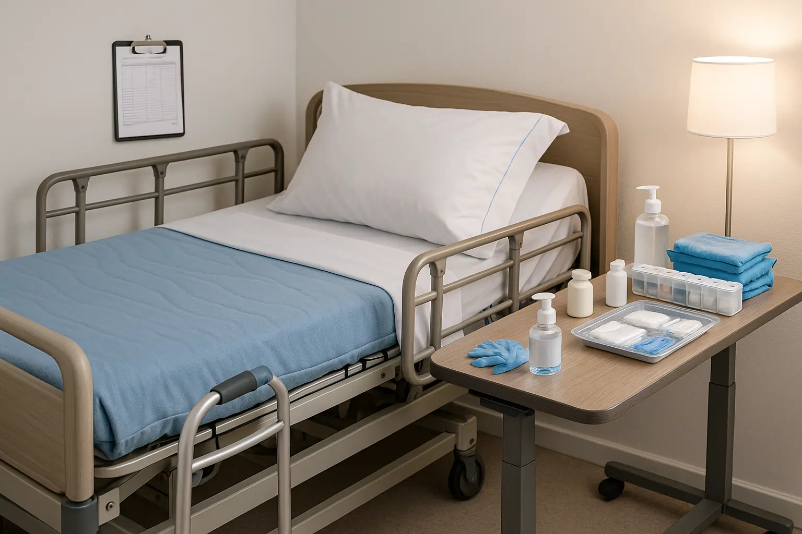

Bedridden Patient Care at Home: Complete Guide for Families & Caregivers


16
NOV
Apricot Care
Imagine you’ve just returned home with a loved one who is recovering from surgery or dealing with a chronic illness. They can no longer move around like they used to, and the responsibility of their care falls squarely on your shoulders. You might feel overwhelmed, unsure where to start, or even afraid of making the wrong choice when it comes to caring for them.
You’re not alone in this. Many families face similar challenges when a loved one becomes bedridden. Whether due to surgery, injury, or illness, caring for a bedridden patient at home can seem like an insurmountable task. But with the right knowledge, tools, and a bit of guidance, you can provide the care your loved one needs and ensure they feel safe, comfortable, and respected.
This guide is designed to help families and caregivers navigate the often-overlooked aspects of bedridden patient care at home. Let’s dive into the essential practices, often skipped in most guides, that will ensure both you and your loved one thrive during this challenging time.
Bedridden Patient Care at Home: Complete Guide for Families & Caregivers
What Does it Mean to Care for a Bedridden Patient?
A bedridden patient is someone who, due to injury, illness, or recovery from surgery, is unable to leave their bed. This can be a temporary situation, or it can become a long-term care need. Families taking on the responsibility of caring for a bedridden loved one will face various challenges, from mobility issues to skin care, and even emotional and psychological stress.
Key Challenges in Bedridden Patient Care That You Might Not Have Thought About
While most guides focus on the usual tasks, like feeding and repositioning, some important aspects often get overlooked. Here’s what you might not be aware of:
- Pressure Sores:
Often referred to as bedsores or pressure ulcers, these can develop
when a patient remains in one position for too long. They’re painful
and can lead to serious infections if not properly
managed.
- Mental Health
Impact: Patients confined to bed can face feelings of
depression, anxiety, and isolation. These emotional challenges can
be just as severe as physical health concerns, but they’re often
brushed aside.
- Physical Complications
Beyond the Obvious: Muscle atrophy, blood clots, and
respiratory issues are not always immediately apparent but require
diligent care to prevent long-term damage.
- Caregiver
Burnout: Providing constant care can be physically and
emotionally draining. Caregivers often neglect their own health,
leading to exhaustion, stress, and even resentment.
Essential Components of Effective Bedridden Patient Care
When caring for a bedridden loved one, several key areas need to be managed daily. These include mobility support, nutrition, skin care, mental well-being, and personal hygiene.
1. Repositioning and Mobility Care – More Than Just Turning Them Over
One of the most important tasks is repositioning your loved one every two hours to prevent pressure sores. But it’s not just about turning them over; the way you do this matters. Use proper lifting techniques and ensure the patient’s body is supported to relieve pressure from vulnerable areas. If they are capable of some movement, help them with passive range-of-motion exercises to prevent muscle stiffness and improve circulation.
Key Tip: Always use pillows or foam cushions to support joints and avoid rubbing against sheets. A pressure-relief mattress is a must for long-term bedridden patients.
2. Skin Care – Preventing Pressure Sores
Preventing pressure sores requires more than just moving the patient. Skin inspections should be done daily. Redness or warmth on certain areas (like the heels, back, or elbows) can be an early sign of pressure ulcers. If these are detected early, appropriate action can be taken to prevent worsening.
Key Tip: Use moisturizers and gentle cleansers that don’t strip the skin of its natural oils. Ensure that the bed sheets are smooth and free of wrinkles.
3. Nutrition and Hydration – The Cornerstones of Recovery
Proper nutrition and hydration are critical. A well-balanced diet rich in protein, vitamins, and minerals can support the healing process and prevent malnutrition. It’s not just about the patient eating; it’s about providing the right kinds of meals that are easy to digest and encourage a healthy appetite.
Key Tip: If swallowing becomes difficult, consider offering soft foods or using a feeding tube as recommended by healthcare providers.
4. Mental and Emotional Well-being – More Than Just Physical Care
Being bedridden can lead to emotional isolation, depression, and a sense of hopelessness. Many caregivers overlook this aspect of care, but mental health is just as important as physical health. Regular social interaction, mental stimulation (e.g., puzzles, books, or even watching a favorite TV show together), and simply talking with the patient can significantly improve their emotional well-being.
Key Tip: Try to keep the patient engaged with their surroundings — open the curtains to let natural light in, allow them to choose their clothing, or involve them in daily decisions when possible.
Common Mistakes Caregivers Make When Caring for a Bedridden Patient
While most caregivers have good intentions, there are a few common mistakes that are made in bedridden patient care:
- Ignoring Caregiver
Self-Care: It’s easy to get caught up in your loved
one’s needs and forget about your own. But caregivers who neglect
their physical and mental health can quickly burn out.
- Failure to Seek
Professional Help When Necessary: Many caregivers try
to do everything themselves, but when the patient requires medical
interventions (e.g., wound care, physical therapy), it’s essential
to seek professional help.
- Not Creating a
Routine: A structured daily routine can provide
stability and comfort to the patient. Without one, both patient and
caregiver might feel stressed and out of control.
What Families Need to Know About Professional Care Services
While it’s important to do as much as you can at home, there are times when professional care services are needed. This is especially true when the patient has complex medical needs, such as wound care, physical therapy, or the need for round-the-clock supervision.
Professional services such as Caregiver Services in Pune or assistance from a neuro rehabilitation centre can ensure that your loved one receives the highest level of care. These services provide specialized support that can ease the burden on families and provide peace of mind.
Key Tip: Don’t hesitate to inquire about part-time or full-time caregiver options. A professional can take care of the medical and daily needs, giving you time to focus on other responsibilities.
When Is It Time to Seek External Help?
Knowing when to ask for help can be difficult. But recognizing the signs early can make a huge difference in your loved one’s recovery process. Here are some signs that professional help is needed:
- The patient’s skin condition
worsens, despite your best efforts.
- There are signs of infection
(e.g., fever, unusual discharge, swelling).
- The patient is unable to move,
even with assistance, leading to muscle atrophy or joint
contractures.
- Caregiving becomes overwhelming,
leading to caregiver burnout.
In these cases, seeking professional help from a neuro rehabilitation centre in Pune or Caregiver Services in Pune can ensure that both the patient and caregiver receive the support they need.
Wrap Up – Ensuring Dignity and Comfort in Every Step of the Journey
Caring for a bedridden patient is a journey, one that requires patience, love, and the right knowledge. From repositioning to mental health support, every step you take ensures your loved one’s comfort, safety, and dignity. Remember, you are not alone. There are resources, like Apricot Care Assisted Living and Rehabilitation, that can provide the necessary expertise to make this process easier for both the patient and the caregiver.
Are you ready to take the next step toward ensuring the best care for your bedridden loved one? Or is there a small change you can make today to improve their comfort and dignity?
If you’re feeling overwhelmed, know that Apricot Care Assisted Living and Rehabilitation can help. We offer specialized Caregiver Services in Pune and neuro rehabilitation centre programs to ensure your loved one receives the care they deserve. Reach out to us today to learn how we can assist with your family’s care needs.
FAQs
1. How often should I reposition a bedridden patient?
Reposition a bedridden patient every 2 hours to prevent pressure sores and improve circulation.
2. What are the common signs of pressure sores in bedridden patients?
Look for redness, warmth, or discoloration on pressure points like heels, sacrum, or elbows, which may indicate the start of a pressure sore.
3. How can I ensure my bedridden patient gets proper nutrition?
Provide a balanced diet with high protein and essential vitamins, and offer small, frequent meals to meet their nutritional needs.
4. When should I seek professional help for a bedridden patient?
Seek professional help if there are signs of infection, worsening skin conditions, or if caregiving becomes overwhelming.
5. What should I do to support my bedridden patient’s mental health?
Engage in regular conversation, provide entertainment like music or books, and ensure they have social interaction to reduce feelings of isolation.